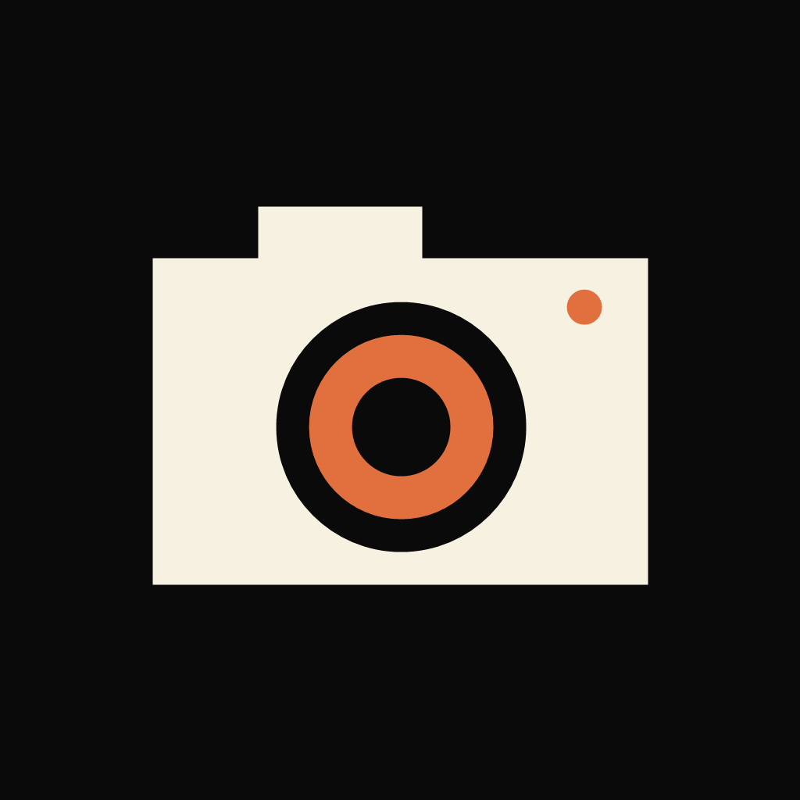

LUMA · FILM CAMERA
แค่เปิดลิงก์
ก็พร้อมเก็บความทรงจำ
กล้องฟิล์มบนมือถือของคุณ
42 โทนฟิล์ม · ดูภาพสด · ถ่ายและบันทึกรูป
เปิดใช้งานบนเว็บได้ทันที
พร้อมแล้ว ไปถ่ายรูปกัน
เปิดหน้ากล้อง แล้วแตะ “เปิดกล้องของคุณ”
อนุญาตกล้องเมื่อเบราว์เซอร์ถาม
แนะนำเปิดใน Safari บน iPhone ภาพในคลังของเว็บอยู่บนอุปกรณ์นี้ ควรบันทึกรูปที่ต้องการเก็บลงเครื่อง
เปิดครั้งหน้าได้สะดวกขึ้นเพิ่มไอคอนบนหน้าจอ iPhone
- เปิดหน้ากล้องใน Safariแตะปุ่ม “เปิดกล้อง LUMA” ด้านบน
- แตะปุ่มแชร์ ↑เลือก “เพิ่มไปยังหน้าจอโฮม” (Add to Home Screen) หากไม่พบ ให้ดูในรายการเพิ่มเติม
- แตะเพิ่มหากมีตัวเลือก “เปิดเป็นเว็บแอป” ให้เปิดไว้ ครั้งหน้าแตะไอคอน LUMA จากหน้าจอโฮมได้เลย
คุณเปิด LUMA เป็นเว็บแอปจากหน้าจอโฮมแล้ว
ดูวิธีเพิ่มไอคอนจาก Apple ↗